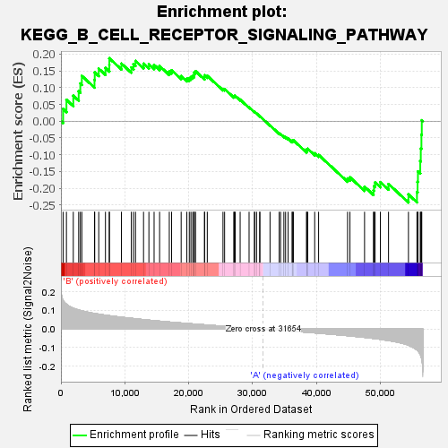
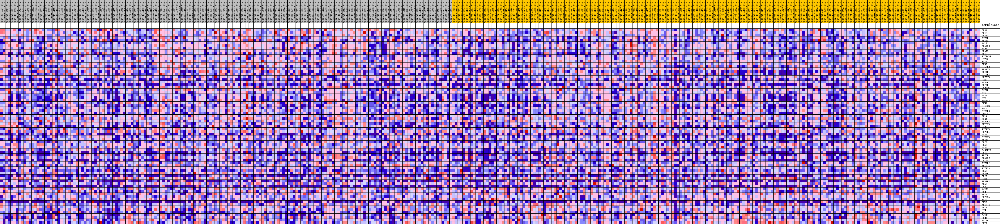
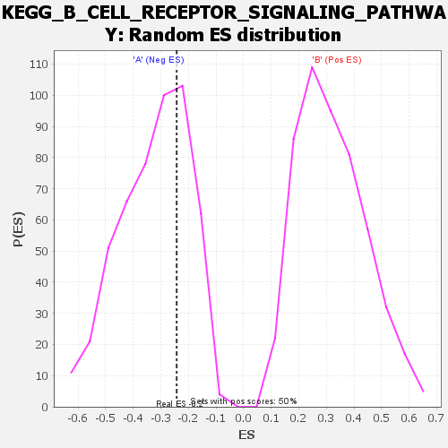

| | | Dataset | my.my.cls#B_versus_A.my.cls#B_versus_A_repos |
| Phenotype | my.cls#B_versus_A_repos |
| Upregulated in class | A |
| GeneSet | KEGG_B_CELL_RECEPTOR_SIGNALING_PATHWAY |
| Enrichment Score (ES) | -0.24265896 |
| Normalized Enrichment Score (NES) | -0.74623066 |
| Nominal p-value | 0.6955645 |
| FDR q-value | 0.7676069 |
| FWER p-Value | 1.0 |
Table: GSEA Results Summary

Fig 1: Enrichment plot: KEGG_B_CELL_RECEPTOR_SIGNALING_PATHWAY
Profile of the Running ES Score & Positions of GeneSet Members on the Rank Ordered List
| SYMBOL | TITLE | RANK IN GENE LIST | RANK METRIC SCORE | RUNNING ES | CORE ENRICHMENT | | 1 | CD81 | na | 339 | 0.155 | 0.0365 | No |
| 2 | AKT2 | na | 864 | 0.133 | 0.0640 | No |
| 3 | IKBKG | na | 1935 | 0.112 | 0.0759 | No |
| 4 | PIK3R1 | na | 2777 | 0.103 | 0.0893 | No |
| 5 | NFATC4 | na | 3033 | 0.100 | 0.1124 | No |
| 6 | MALT1 | na | 3271 | 0.098 | 0.1352 | No |
| 7 | NFATC3 | na | 5251 | 0.084 | 0.1233 | No |
| 8 | MAPK1 | na | 5290 | 0.084 | 0.1457 | No |
| 9 | NFAT5 | na | 5919 | 0.080 | 0.1567 | No |
| 10 | AKT3 | na | 6968 | 0.075 | 0.1587 | No |
| 11 | PIK3AP1 | na | 7573 | 0.072 | 0.1679 | No |
| 12 | PTPN6 | na | 7578 | 0.072 | 0.1877 | No |
| 13 | RAF1 | na | 9467 | 0.064 | 0.1719 | No |
| 14 | GRB2 | na | 11019 | 0.058 | 0.1604 | No |
| 15 | LILRB3 | na | 11356 | 0.057 | 0.1701 | No |
| 16 | PPP3CB | na | 11670 | 0.055 | 0.1798 | No |
| 17 | IFITM1 | na | 12928 | 0.051 | 0.1716 | No |
| 18 | PIK3R5 | na | 13767 | 0.048 | 0.1699 | No |
| 19 | NFKBIB | na | 14580 | 0.045 | 0.1680 | No |
| 20 | RAC3 | na | 15440 | 0.043 | 0.1645 | No |
| 21 | MAP2K1 | na | 16959 | 0.038 | 0.1482 | No |
| 22 | CD79B | na | 17320 | 0.037 | 0.1520 | No |
| 23 | PPP3CC | na | 18816 | 0.033 | 0.1345 | No |
| 24 | GSK3B | na | 19705 | 0.030 | 0.1272 | No |
| 25 | SYK | na | 20089 | 0.029 | 0.1285 | No |
| 26 | VAV1 | na | 20346 | 0.029 | 0.1318 | No |
| 27 | BTK | na | 20623 | 0.028 | 0.1346 | No |
| 28 | FCGR2B | na | 20842 | 0.027 | 0.1383 | No |
| 29 | CHUK | na | 20857 | 0.027 | 0.1455 | No |
| 30 | PIK3CG | na | 21068 | 0.027 | 0.1491 | No |
| 31 | RAC2 | na | 22472 | 0.023 | 0.1306 | No |
| 32 | PIK3R3 | na | 22479 | 0.023 | 0.1369 | No |
| 33 | PLCG2 | na | 22904 | 0.022 | 0.1354 | No |
| 34 | RELA | na | 25360 | 0.016 | 0.0962 | No |
| 35 | SOS1 | na | 25614 | 0.015 | 0.0959 | No |
| 36 | MAP2K2 | na | 27050 | 0.011 | 0.0736 | No |
| 37 | INPP5D | na | 27129 | 0.011 | 0.0752 | No |
| 38 | CARD11 | na | 27272 | 0.011 | 0.0756 | No |
| 39 | PIK3CB | na | 28048 | 0.009 | 0.0644 | No |
| 40 | PPP3R1 | na | 29444 | 0.005 | 0.0412 | No |
| 41 | VAV3 | na | 30282 | 0.003 | 0.0273 | No |
| 42 | PIK3CD | na | 30315 | 0.003 | 0.0276 | No |
| 43 | NFATC1 | na | 30617 | 0.003 | 0.0230 | No |
| 44 | CD72 | na | 31117 | 0.001 | 0.0145 | No |
| 45 | HRAS | na | 31126 | 0.001 | 0.0147 | No |
| 46 | VAV2 | na | 32723 | -0.003 | -0.0128 | No |
| 47 | RASGRP3 | na | 34156 | -0.006 | -0.0364 | No |
| 48 | CD19 | na | 34375 | -0.007 | -0.0385 | No |
| 49 | PRKCB | na | 34892 | -0.008 | -0.0454 | No |
| 50 | NFATC2 | na | 35158 | -0.009 | -0.0477 | No |
| 51 | CD79A | na | 35555 | -0.010 | -0.0520 | No |
| 52 | PIK3R2 | na | 36180 | -0.011 | -0.0600 | No |
| 53 | NFKBIA | na | 36221 | -0.011 | -0.0575 | No |
| 54 | PIK3CA | na | 36393 | -0.012 | -0.0573 | No |
| 55 | KRAS | na | 38448 | -0.017 | -0.0889 | No |
| 56 | IKBKB | na | 38457 | -0.017 | -0.0843 | No |
| 57 | CD22 | na | 38621 | -0.018 | -0.0823 | No |
| 58 | RAC1 | na | 39710 | -0.021 | -0.0959 | No |
| 59 | PPP3R2 | na | 40324 | -0.022 | -0.1007 | No |
| 60 | NRAS | na | 44857 | -0.036 | -0.1710 | No |
| 61 | CR2 | na | 45230 | -0.037 | -0.1675 | No |
| 62 | MAPK3 | na | 47515 | -0.045 | -0.1955 | No |
| 63 | JUN | na | 48909 | -0.051 | -0.2063 | No |
| 64 | AKT1 | na | 48994 | -0.051 | -0.1938 | No |
| 65 | PPP3CA | na | 49166 | -0.052 | -0.1826 | No |
| 66 | SOS2 | na | 49991 | -0.055 | -0.1820 | No |
| 67 | CHP2 | na | 51267 | -0.062 | -0.1875 | No |
| 68 | NFKBIE | na | 54386 | -0.087 | -0.2188 | Yes |
| 69 | NFKB1 | na | 55714 | -0.113 | -0.2113 | Yes |
| 70 | LYN | na | 55811 | -0.115 | -0.1812 | Yes |
| 71 | FOS | na | 55867 | -0.117 | -0.1500 | Yes |
| 72 | DAPP1 | na | 56231 | -0.135 | -0.1192 | Yes |
| 73 | BLNK | na | 56315 | -0.143 | -0.0814 | Yes |
| 74 | BCL10 | na | 56416 | -0.154 | -0.0408 | Yes |
| 75 | CHP1 | na | 56470 | -0.161 | 0.0027 | Yes |
Table: GSEA details [plain text format]

Fig 2: KEGG_B_CELL_RECEPTOR_SIGNALING_PATHWAY
Blue-Pink O' Gram in the Space of the Analyzed GeneSet

Fig 3: KEGG_B_CELL_RECEPTOR_SIGNALING_PATHWAY: Random ES distribution
Gene set null distribution of ES for KEGG_B_CELL_RECEPTOR_SIGNALING_PATHWAY